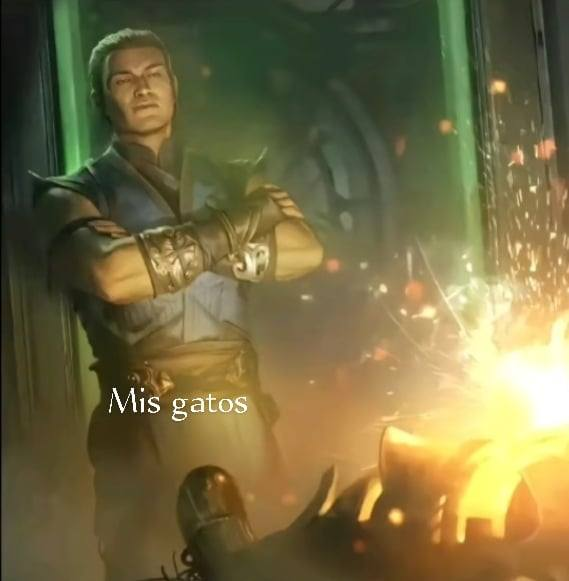
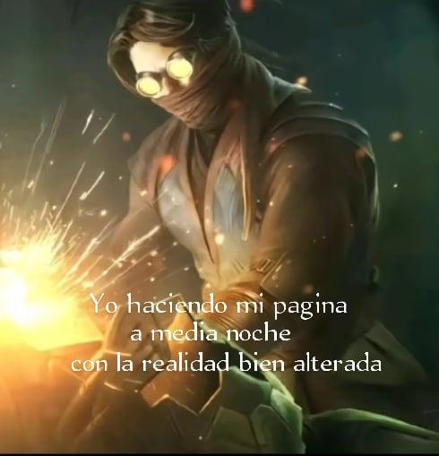
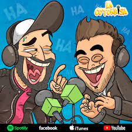
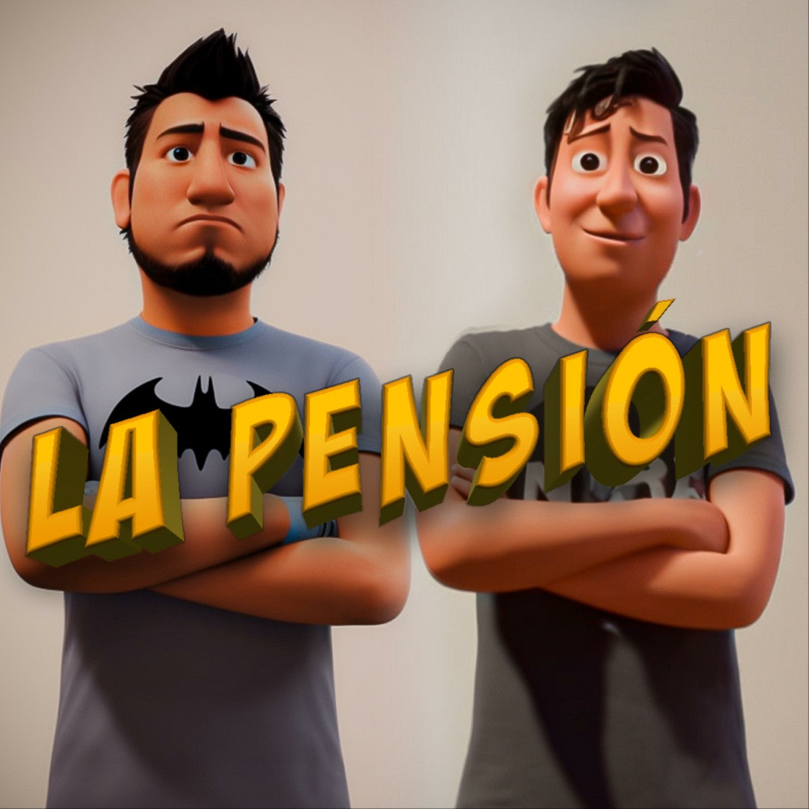

Deja de pensar en ella
Ey tu si tu, tu y yo sabemos porque llegaste a este lugar y es
porque no podes olvidar a tu ex y eso hace que veas aun sus fotos
y la stalkees. Lo se yo igual estoy asi :c pero estamos aqui para
ayudarnos.
La cosa es que ya dejes de pensar en ella y esta hermosa
y amable pagina que esta siendo desarrollada a media noche por un
wey que le gusta dejar las cosas para ultimo momento pues
si ese soy yo. Mi nombre? na para que no soy alguien importante
simplemente estoy aqui para ayudar asi que sigamos.
Por lo largo o corto o como tu lo veas te ire dejando diferentes
links(ojo no tienen ningun troyano ni nada xd), solo son diferentes
links que te llevaran a distintos videos los cuales haran que te
distraigas y no pienses en la imnombrable o el imnombrable. Tambien
te ire dejando algunos consejos para que la olvides y te pongas
mamadisimo o mamadisima y asi el o ella llore como tu lloraste
esa noche cuando te dijo que andaba con su amigo o amiga. Ahora
si mucho texto empecemos.

Musicas chidas UWU
Aca podremos ver todo tipo de musica alegre
no depresiva, si asi es no todo es triste amiguito aqui habra una lista
de canciones que no son depresivas solo son bonitas y te llenan
de energia. Bueno ahora si empecemos y estas son las rolitas:
- Colmilllo de tainy: Esta rola acaba de salir ayer y pues solo
decir que es un exito y una joyita yiyiyi.
click
aca para la musica.
- Pride de Kendrick Lamar: Esta joyita aunque tenga una melodia triste
habla sobre el orgullo que deberias aver tenido cuando ella te hablo
esa noche, no es triste es reflexiva.
click
aca para la musica.
- Fruto de Milo j x Bizarrap: esta es una verdadera joyita porque la verdad
fue hecha por un pibe de 16 años 16 AÑOS SEÑORES pero weno
se las recomiendo.
click
aca para la musica.
- Malbec de Duki x Bizarrap: Simplmente escuchar el nombre del que
la esta cantando ya es obvio que sera una joya.
click
aca para la musica.
- Homage: esta rolita si te hace poner pensativo pero a la vez te
hace poner feliz poner la melodia tranquila que tiene.
click
aca para la musica.
- Superman de Eminem: simplmente decir disfrutenlo por que es una joya
jajajajaja. click
aca para la musica.
Y esto seria todo por hoy ya ire aumentando mas
rolitas pero hasta ahora estas son todas las cuales yo considero que son
buenas y que te hacen cambiar de pensamiento.
Que? que quieres ponerte triste y cortarte las venas pues weno aca te dejo estas
joyitas con las cuales una gran mayoria se deprime:
- Vacations - Telephones: Que mas decir que esta rola te hace sentir unas vibras
extrañas las cuales dices lptm jimbo, en resumen te hacen pensar y te ponen
triste. click
aca para la musica.
- Radiohead - Creep: Esta que mas decir esta rola a una gran mayoria le
hizo salir la lagrimita de macho en la sala de cine, mientras se
veia Guardianes de la Galaxia Vol.3, ademas que tiene una letra la cual
te hace reflexionar y pensar en muchas cosas.click
aca para la musica.
- Heart to heart - Mac DeMarco: Esta Rola que mas decir te pone triste desde
que escuchas su intro jajajajaja(rio para no llorar pipipipi).click
aca para la musica.
- Someone To Spend Time With - Los Retros: Esta rola es una joyita y pues
sin mas decir disfrutenla.click
aca para la musica.
- 505 - Arctic Monkeis: Que mas decir de esta rola te hace pensar en muchas
y es muy reflexiva.click
aca para la musica.
Podcast Chidos UWU
Aqui tambien te dejare algunos podcast y canales de
youtube los cuales son muy entretenidos y muy buenos con los cuales te podes entretener y dejar de pensar en esas
cosas
- La cotorrisa: Este es un podcast muy buena se trata sobre anecdotarios
y muchas cosas mas
clic aqui para que te envie directo a su canal.

- La pension: Es un podcast de experencias y anecdotas sobre ellos los
mas de una risa si te sacaran,
clic aqui para que te envie directo a su canal.

- Hermanos de leche: Es un podcast donde hablan sobre muchos temas los
cuales te aseguro te sacaran mas de una sonrisa,
clic aqui para que te envie directo a su canal.
- Hablando Huevadas: Es un show improvisado el cual interactua con su
publico y asi poder desarrollar todo un show,
clic aqui para que te envie directo a su canal.
- Leyendas Legendarias: En este podcast se habla sobre diversos
temas paranormales o leyendas los cuales siempre te sacaran
una sonrisa,
clic aqui para que te envie directo a su canal.

Bueno y eso es todo la verdad si ella o el no te
te quieren o te rechazaron pues dejala como dijo un sabio hay mas culos
que estrellas, pero hay veces que no podes encontrar a la misma estrella
2 veces, pero ya llegara alguien que nos valorara mientras enfocate en
ti y deja de pensar en esa persona que probablemente no esta pensando en
ti, Y asi como dijo alguien ama como Farit y quierete
como el Temach.